// ISSUE 004 — A KICKERSHOE COMIC
THE GOLDFISH MEMORY
A motion comic. A tiny fish, a big obsession, and the shoe born from missing something orange. Twelve panels follow a swimmer from a near-drowning to a workbench to the ocean again — proof that the strangest origin stories are usually the true-feeling ones.
OUT NOW
// THE FULL STORY
THE COMIC
-
01 // THE STORM

He loved the sea. The sea, currently, disagreed.
-
02 // THE GOLDFISH
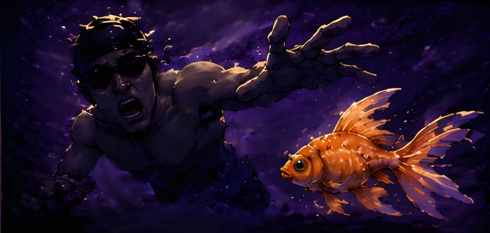
Mid-panic, one goldfish. Completely unbothered. Rude, honestly.
-
03 // FACE TO FACE
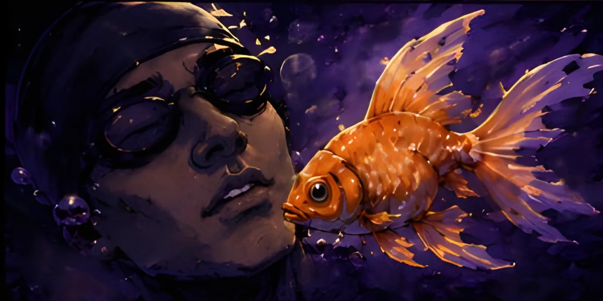
It didn't say a word. It didn't need to. He just... followed.
-
04 // THE LEDGE
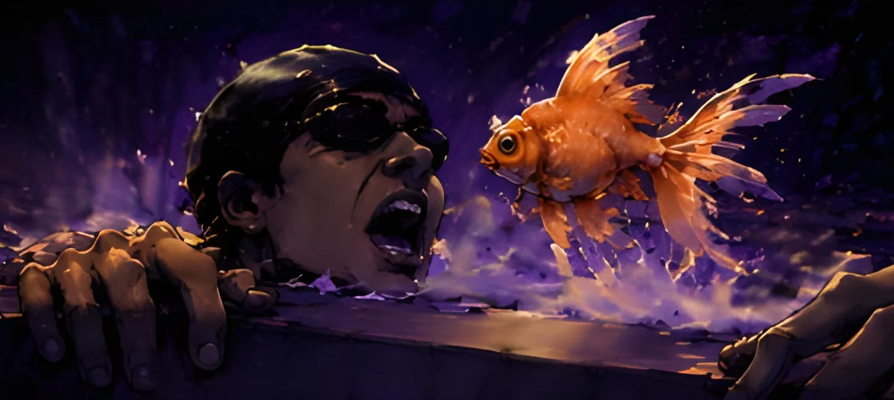
Land. Air. A fish that definitely saved his life and will never let him forget it.
-
05 // THE BOWL
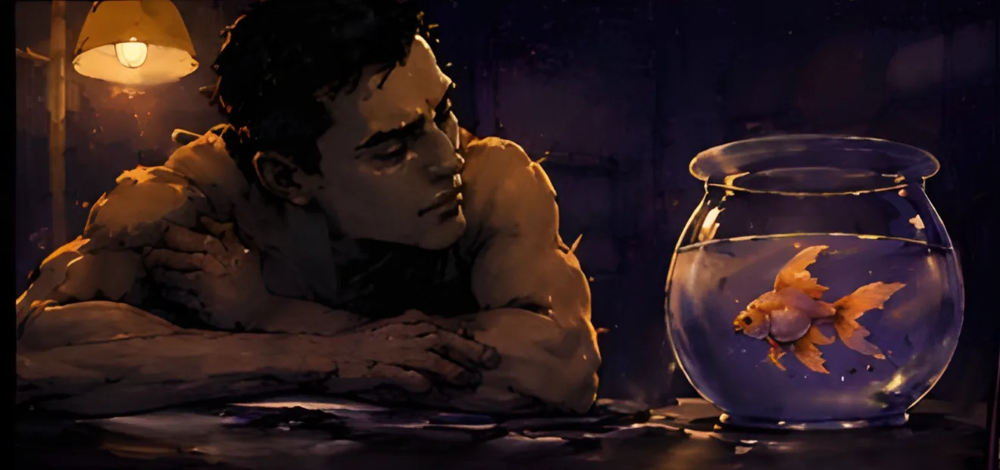
That night he bought a fish bowl. Then stared at it for four hours. Normal behaviour.
-
06 // THE BLUEPRINT
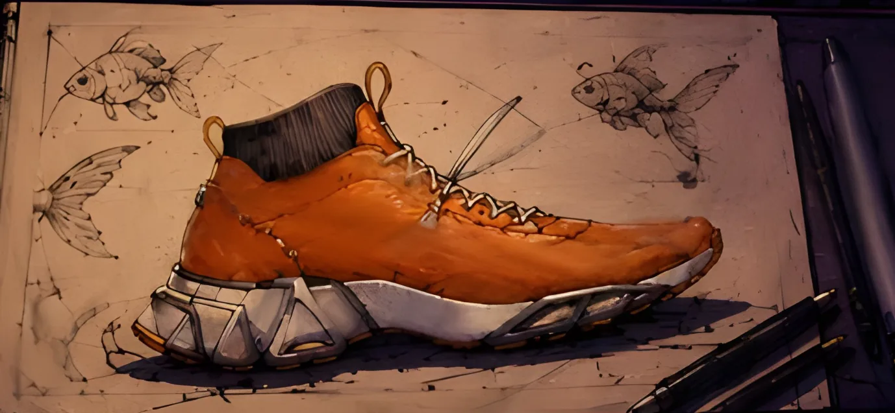
He couldn't move into the sea. So he decided the sea would move into his wardrobe.
-
07 // THE CARVING
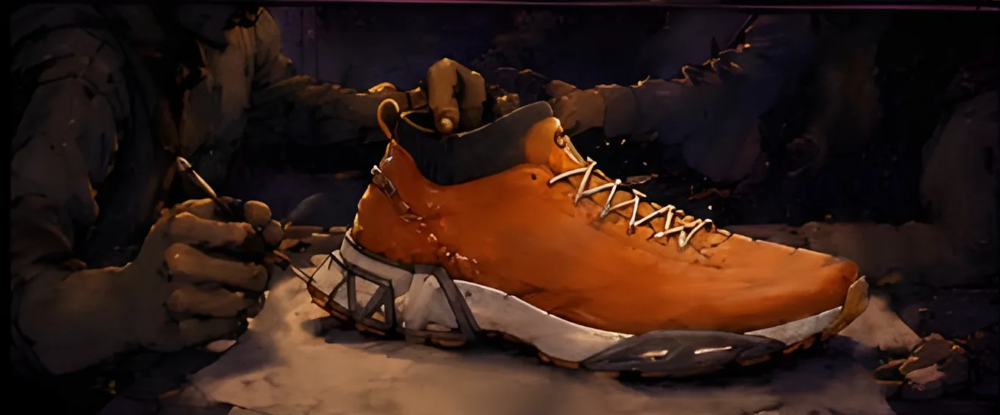
Every stitch, every scale, hand-carved from memory. Mostly the memory of one very specific fish.
-
08 // ON DISPLAY
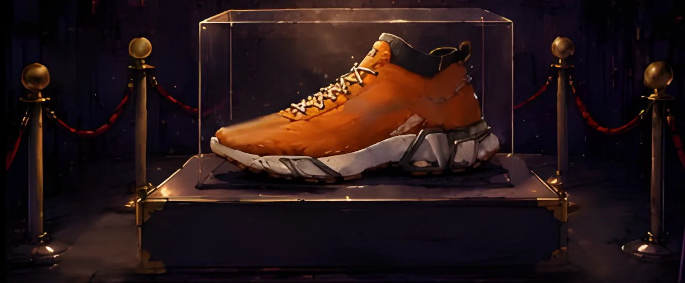
He roped it off like the Mona Lisa. It is, in fact, a shoe.
-
09 // THE ROAR
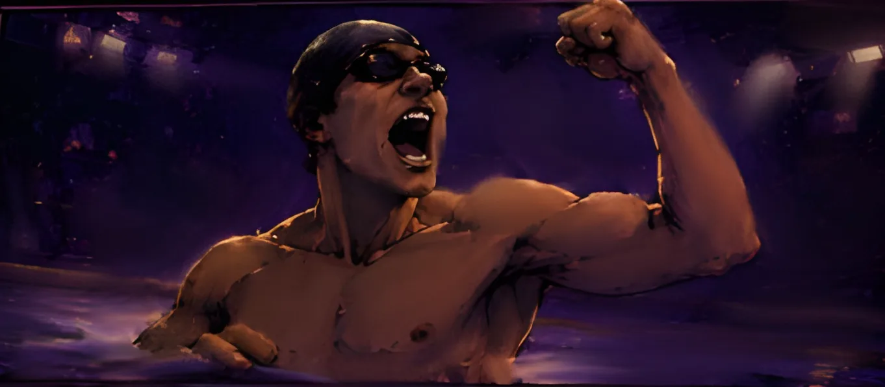
First lap in the new pair. Screamed like he'd won gold. He had, in fact, won a shoe.
-
10 // FIRST STRIDE
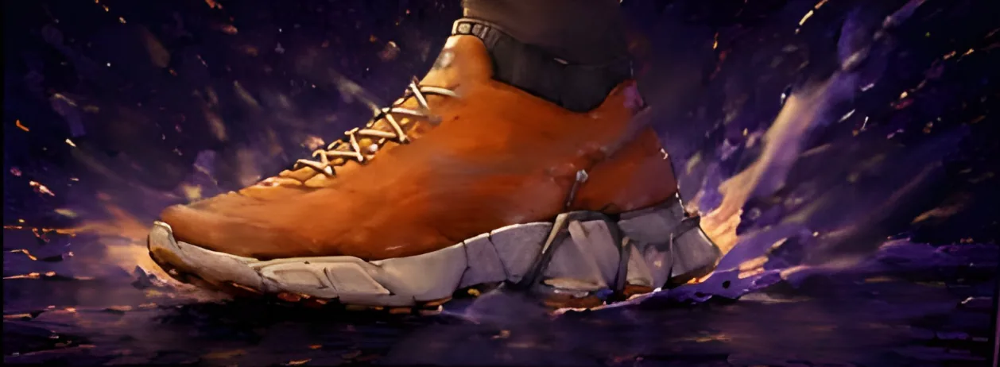
Fast. Free. Faintly smells like a pet store. Worth it.
-
11 // BACK IN THE WATER
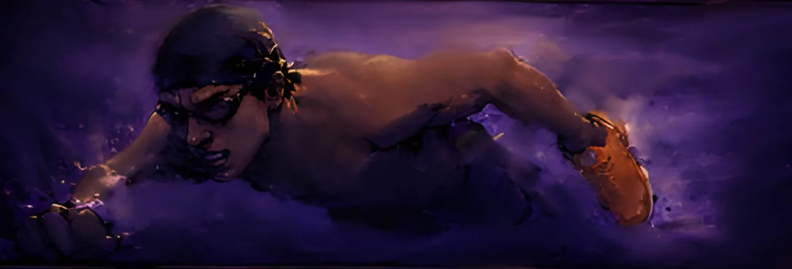
Took it swimming. Held it like a lifeguard holds a drowning man. The shoe did not appreciate this.
-
12 // FULL CIRCLE
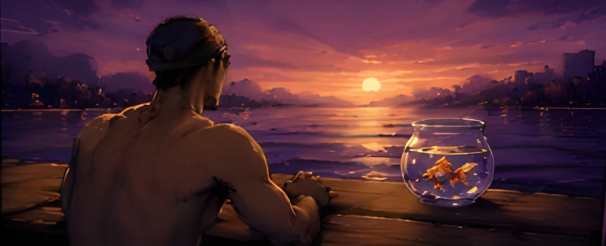
Turns out the fish had company all along. So, now, does he. Everyone agreed: only he could miss a fish enough to invent a shoe.
// FIELD NOTES — RESTRICTED
LORE
ENTRY 01WHO IS THE SWIMMER?+
No name on record. Municipal pool regular. Personal best: irrelevant. Emotional attachment to a single goldfish: unprecedented.
ENTRY 02THE FIRST BOWL+
Bought same day, same hour as the incident. Staff at the pet store described the purchase as "intense." No further comment given.
ENTRY 03THE HIDDEN INSPIRATION+
Records recovered from the same waterlogged notebook mention a real long-distance swimmer who once crossed the entire Amazon River over 66 days, allegedly fuelled by nothing but willpower and, by his own account, a great deal of wine. Our swimmer has never swum the Amazon. He has, however, once refused to leave a swimming pool for eleven hours over a goldfish. We're told the comparison "tracks."
ENTRY 04THE DESIGN BRIEF+
The upper's fin-panel paneling isn't cosmetic — it's cut from the same drag-reduction logic used in competitive swimwear, just applied to a shoe that will never touch water on purpose. The sole's flex zones were mapped to a goldfish's own propulsion pattern: short, repeated bursts rather than one long push, because obsession, like swimming a river the size of a country, is rarely one motion — it's thousands of small ones that never stop. And the see-through heel window exists for exactly one reason: so the wearer can always, always see the colour underneath.
ENTRY 05WHY ORANGE?+
Because gold felt like bragging and the fish never asked for a medal. Orange was already telling the truth.
ENTRY 06ENTRY 08, REDACTED+
Entry 08 is missing from this notebook. Water damage, we're told. The fish, we're also told, looks unbothered either way.
ENTRY 07THE PITCH+
Internally logged as Project AMAZON GUPPY — small fish, big river, a joke nobody could stop making once it started. Pitched to two swimwear brands and one aquarium supply chain, unprompted, uninvited. The swimwear brands did not respond. The aquarium supply chain sent back a very confused email asking if this was "a shoe or a fish tank ornament." The honest answer is both. If a certain marathon swimmer is somehow reading this: we owe you a pair, and we owe your river an apology.
// KEEP READING